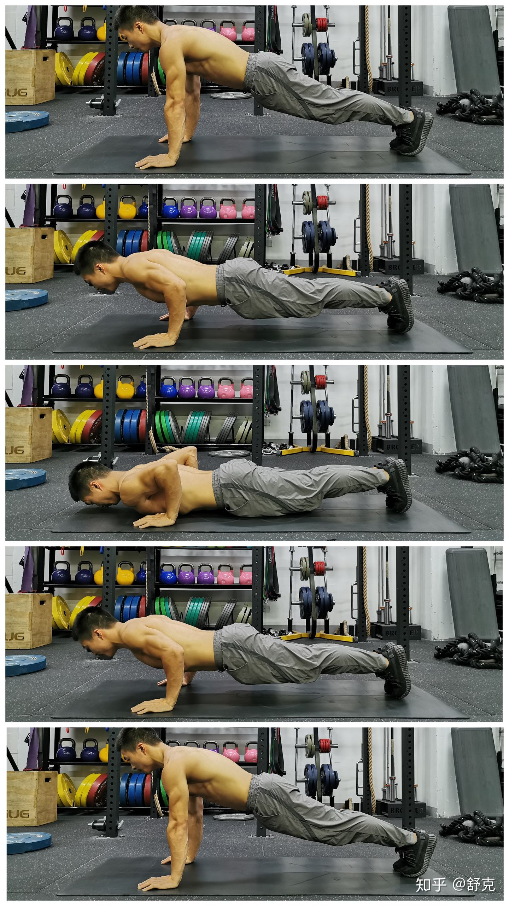
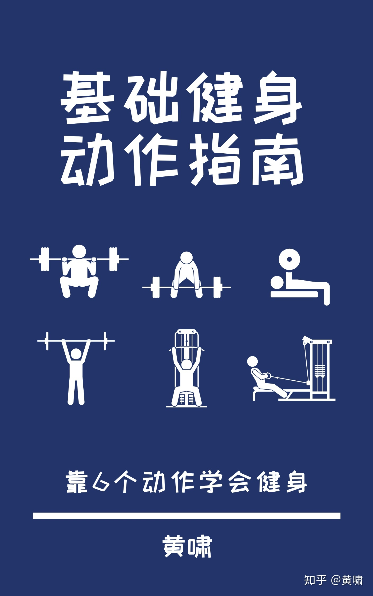
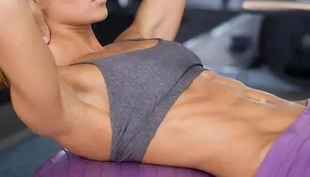

俯卧撑篇

正确的起始姿势，需要你做到以下几点：
（1）双手与肩同宽，手指朝前，同时手臂垂直地面；
（2）双腿并拢，双膝伸直，屁股收紧；
（3）身体呈一条直线：头、肩、髋、膝和踝处于一条直线上。
第2步：下降至底部姿势动作：有控制地下降至底部姿势，整个过程尽可能地保持前臂垂直地面，且始终维持身体呈一条直线。
呼吸：吸气。
时间：2秒。
第3步：上升回到起始姿势
动作：上升回到起始姿势，与下降过程一样，整个过程尽可能地保持前臂垂直地面，且始终维持身体呈一条直线。
呼吸：吐气。
时间：1秒。
引体向上篇

步骤1：工具
想要学会引体向上，得具备一条引体直杠、一些防滑粉和一个踏板。防滑粉非常重要，因为引体向上对握力有一定的要求。踏板也非常重要，健身房里的引体杠都比较高，对于那些个子低的同学来说非常有帮助。
步骤2：设置
先在手上擦一点防滑粉，再在引体杠下放一个踏板。
你也可以不用踏板，直接跳起来抓住单杠，不过我觉得在跳起来之后再试着找到准确的握距很费力，而且如果跳得过猛，身体还在晃荡，得等身体停止之后才能做，白费了很多的力气。
所以我建议用踏板抬高自己。
步骤3：握距
很多人对引体向上的握距存着一定的误解，所以我想仔细解释一下引体向上握距的问题。
卷腹篇

动作要领：1、仰躺在地面上（最好找个垫子），找一个凳子，让你的双脚架在上面（凳子不要太高，差不多大腿的高度就够了），双脚的脚尖朝内让他们可以相互碰到双手可以放在颈后也可以交叉放在胸前，贴在太阳穴两侧也可以，随你喜欢2、向上弯曲你的双肩以及躯干，让其尽可能的靠近你的膝盖让背部弯曲，但是不要让整个背部离开地面，只需要向前蜷缩，让胸腔靠近骨盆就可以了在动作的最高处，紧缩你的腹肌，坚持1秒钟3、放松，有控制缓慢的下放躯干和双肩，直到肩膀碰到垫子了，也就是完全回到起始位置，再开始下一次的反复。技巧及注意事项：1、双手不要很用力的抱住头部（也就是向传统仰卧起坐那样双手交叉抱住），这样你会利用手的力量将肩膀抬起来，也就是说会借力；你应该用腹部的力量将身体抬起。2、做这个动作并不是抬起的越高越高，做的幅度不同刺激到的部位也是不同的。3、你可以抬起的尽可能高，不过你的肩膀应该只需要抬到差不多和凳子一样的高度就够了；另外你的下背部应该始终贴在地面上。4、动作的全程你的腹肌都应该是发力的。5、如果你想做的轻松一些，那么抬起的幅度低一下，另外双手交叉放在胸前比放在颈后要容易。